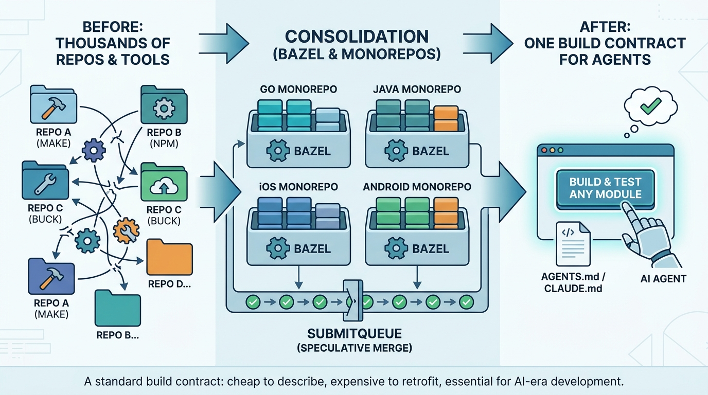

Part I — FOUNDATIONS: The Decade Before AI
From Two Services to One Build Command: Microservices, Monorepos and Bazel

Image generated by Google Gemini (gemini-3-pro-image-preview)
Part I — FOUNDATIONS: The Decade Before AI

Image generated by Google Gemini (gemini-3-pro-image-preview)